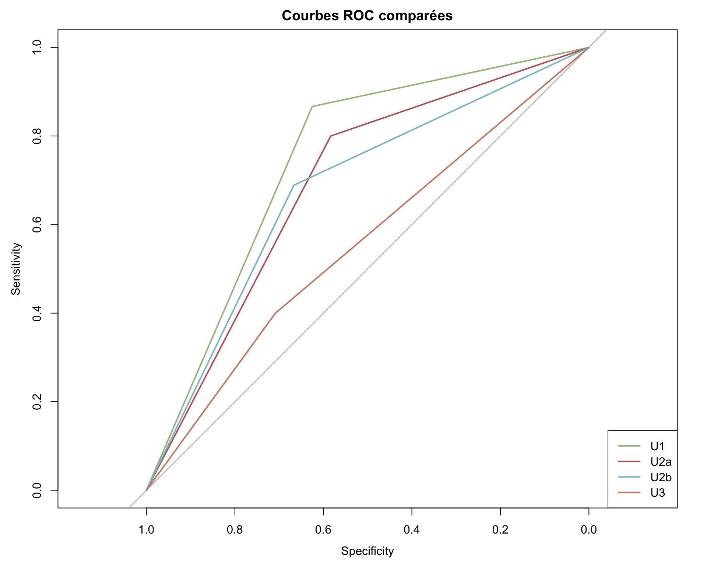
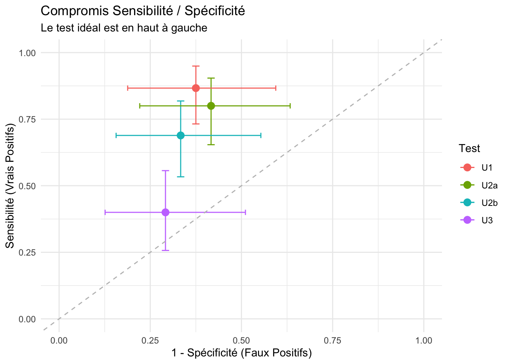
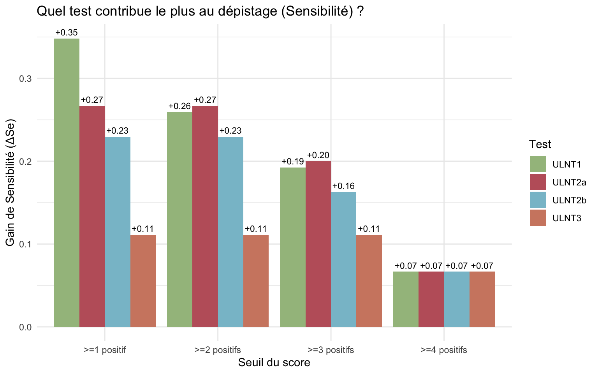
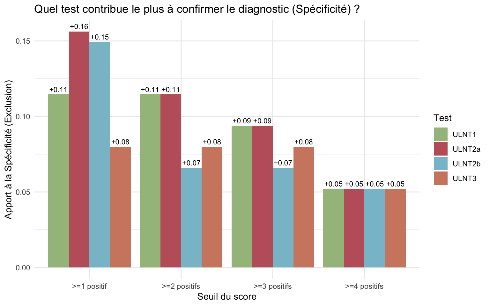
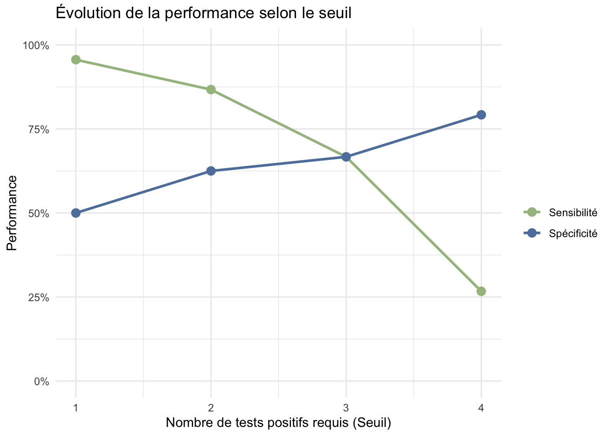
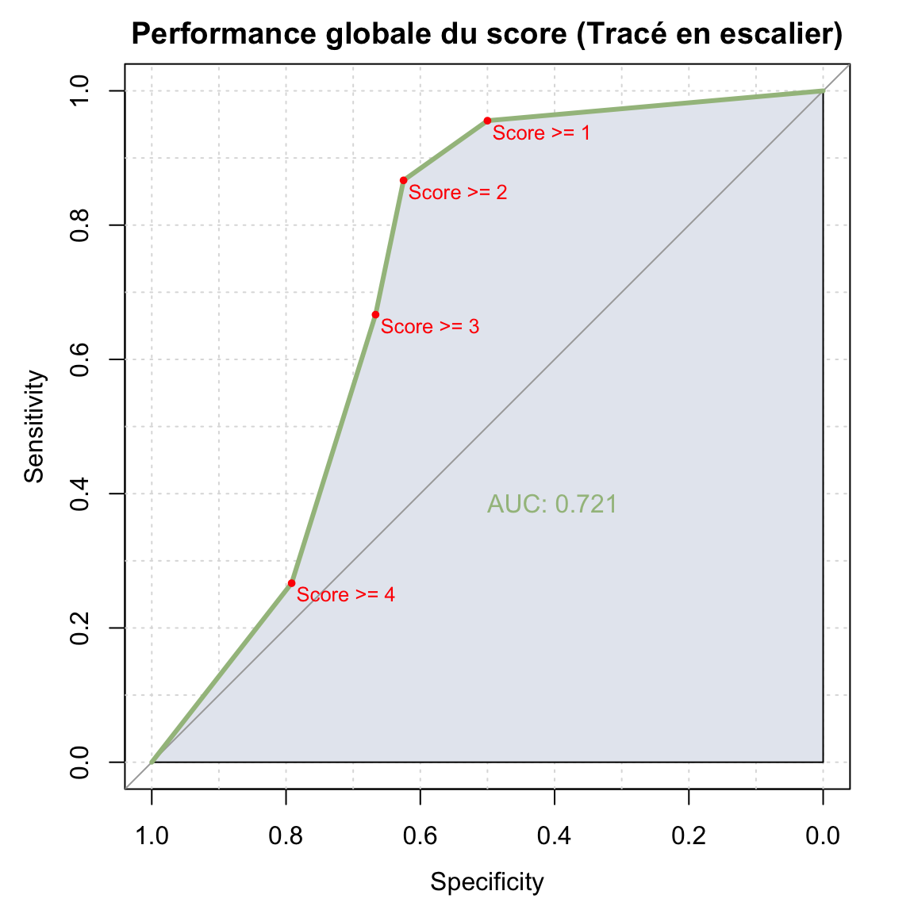
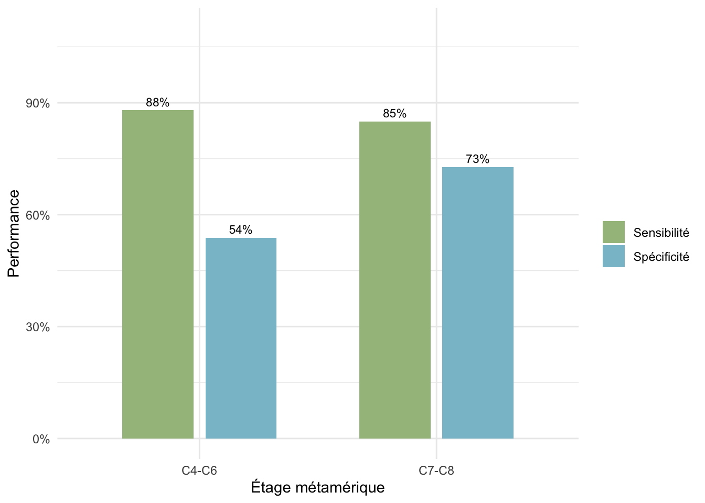

Stats Thèse Brieuc
1 Introduction
4 tests ULNT (Upper Limb Neurodynamic Tests) : ULNT1, ULNT2a, ULNT2b, ULNT3
Évaluation de la performance diagnostique de ces tests pour le diagnostic des névralgies cervicobrachiales (NCB) en consultation de chirurgie orthopédique, par rapport à un gold standard principal basé sur l’examen clinique + IRM.
2 Conformité au protocole de la méthodologiste
Les points du protocole couverts sont :
la description de la population ;
les performances diagnostiques des tests individuels avec IC95 ;
les comparaisons directes entre ULNT sur donnees appariees ;
la reproductibilite inter-evaluateurs ;
l’exploration des combinaisons de tests ;
la lecture exploratoire selon le niveau metamerique, y compris test par test.
2 divergences :
restriction aux 4 ULNT (pas de Scratch Collapse Test)
pour les gold standard, le second gold standard prévu initialement impliquait la réponse à l’infiltration. Ici, 26 patients ont eu une infiltration, et 24 patients ont des résultats renseignés. On utilise donc la colonne
Gold Standard
3 Méthodes
3.1 Patients
Les données ont été recueillies de manière prospective au CHU de Rennes. Les patients adultes adressés pour une première consultation de chirurgie orthopédique du rachis pour suspicion de névralgie cervico-brachiale ont été inclus dans une base de données dédiée. L’analyse présentée dans ce rapport a porté sur les patients pour lesquels le gold standard principal était renseigné et interprétable dans la base analysée. Dans cette version du recueil, la variable Gold Standard ne comportait que deux modalités, Positif et Negatif, correspondant respectivement à la présence ou à l’absence de névralgie cervico-brachiale selon le gold standard principal.
xxxx
3.2 Procédures
4 tests xxxx
3.3 Critères de jugement
Critère de jugement principal
Le critère de jugement principal était la performance diagnostique des quatre ULNT pour le diagnostic de névralgie cervico-brachiale, par rapport au gold standard principal. Ce critère reposait sur l’estimation, pour chaque test, de la sensibilité, de la spécificité, des valeurs prédictives positive et négative, ainsi que des rapports de vraisemblance positif et négatif.
3.3.1 Critères de jugement secondaires
Les critères de jugement secondaires comprenaient la comparaison appariée des performances diagnostiques entre ULNT, la reproductibilité inter-évaluateurs entre l’évaluateur 1 et l’évaluateur 2, les performances diagnostiques des combinaisons conjonctives de tests, l’analyse du score global de positivité ULNT et de ses seuils, ainsi qu’une exploration des performances selon le niveau métamérique.
3.4 Analyse statistique
Les variables qualitatives ont été décrites par leurs effectifs et pourcentages. Les variables quantitatives ont été décrites par des paramètres de position et de dispersion adaptés à leur distribution. Les données manquantes n’ont pas été imputées.
Les performances diagnostiques des quatre ULNT réalisés par l’évaluateur 1 ont été évaluées par rapport au gold standard principal. Pour chaque test, des tableaux de contingence 2 x 2 ont permis d’estimer la sensibilité, la spécificité, les valeurs prédictives positive et négative, les rapports de vraisemblance positif et négatif, l’indice de Youden et l’aire sous la courbe ROC. Les intervalles de confiance à 95 % des proportions ont été calculés par la méthode binomiale exacte de Clopper-Pearson. L’association entre chaque ULNT et le gold standard principal a été étudiée par le test exact de Fisher.
Les performances des différents ULNT ont été comparées entre elles à l’aide du test de McNemar (\(\chi^2\) pour données appariées). La reproductibilité inter-évaluateurs a été évaluée par le coefficient kappa de Cohen.
Des analyses complémentaires ont porté sur les combinaisons de tests et sur le score global de positivité ULNT, défini comme le nombre total d’ULNT positifs chez un même patient. Les combinaisons conjonctives possibles des quatre ULNT ont été explorées. Le score global a été étudié selon différents seuils de positivité.
Des analyses exploratoires ont également été réalisées selon le niveau métamérique. Pour chaque niveau, la performance de chaque ULNT a été évaluée ainsi que l’association entre le niveau métamérique et la probabilité de névralgie cervico-brachiale.
Les résultats sont présentés sous forme d’estimations ponctuelles avec leurs intervalles de confiance à 95 %. Les modèles logistiques sont présentés sous forme d’odds ratios lorsque cela était pertinent. Les analyses ont été réalisées avec R, version 4.5.2. Tous les tests étaient bilatéraux, avec un seuil de significativité fixé à 0,05. Aucune correction de multiplicité n’a été appliquée aux analyses secondaires ou exploratoires, qui doivent donc être interprétées comme génératrices d’hypothèses.
4 Disclaimer : nombre de sujets nécessaires et précision attendue
Le protocole du CHU de Rennes prévoyait initialement un raisonnement de dimensionnement basé sur la spécificité, à partir d’intervalles de confiance exact de Clopper-Pearson. Cette logique faisait varier la spécificité cible, la marge acceptable entre cette cible et la borne inférieure de l’IC95 %, ainsi que la prévalence attendue de la NCB.
11 scénarios théoriques étaient proposés, et sont recalculés ici :
| Scenario | Target Sp | Prevalence | CI width | Required negatives | Required total N | Lower bound | Computed width |
|---|---|---|---|---|---|---|---|
| S1 | 0.90 | 0.75 | 0.099 | 50 | 200 | 0.801 | 0.099 |
| S2 | 0.90 | 0.50 | 0.099 | 50 | 100 | 0.801 | 0.099 |
| S3 | 0.90 | 0.75 | 0.149 | 27 | 108 | 0.751 | 0.149 |
| S4 | 0.90 | 0.50 | 0.149 | 27 | 54 | 0.751 | 0.149 |
| S5 | 0.90 | 0.60 | 0.099 | 50 | 125 | 0.801 | 0.099 |
| S6 | 0.90 | 0.60 | 0.149 | 27 | 68 | 0.751 | 0.149 |
| S7 | 0.85 | 0.75 | 0.099 | 58 | 232 | 0.751 | 0.099 |
| S8 | 0.85 | 0.50 | 0.099 | 58 | 116 | 0.751 | 0.099 |
| S9 | 0.85 | 0.75 | 0.149 | 30 | 120 | 0.701 | 0.149 |
| S10 | 0.85 | 0.60 | 0.099 | 58 | 145 | 0.751 | 0.099 |
| S11 | 0.85 | 0.50 | 0.149 | 30 | 60 | 0.701 | 0.149 |
En prenant en compte ce tableau, le choix d’arrêter les inclusions peut poser question : le nombre de sujets négatifs minimal nécessaire pour atteindre la précision visée par “le pire scénario” prévue par la méthodologiste n’est pas acquis. Il faudrait 27 cas négatifs sur un effectif total de 68 patients pour cibler une spécificité de 0,90 avec une marge de 0,149 et une prévalence de 60 %.
Or, dans la cohorte analysée, nous avons 24 cas négatifs sur un effectif total de 69 patients, soit une prévalence de NCB de 65.2 %.
Le nombre total de patients est suffisant, mais le nombre de patients négatifs est légèrement inférieur à ce qui était prévu pour atteindre la précision visée sur la spécificité.
5 Résultats
5.1 Population analysée
- Variables disponibles : Âge (
df$Age), Sexe (df$Sexe), Côté (df$Cote), Niveau (df$Niveau), BMI (df$BMI), Tabac (df$Tabac), Infiltrations (df$Infiltrations), Résultat des infiltrations (df$Resultat_Inf)
5.1.1 Âge
| Min. | 1st Qu. | Median | Mean | 3rd Qu. | Max. |
|---|---|---|---|---|---|
| 27 | 45 | 51 | 52 | 59 | 77 |
- Représentation de la variable âge par histogramme avec densité et QQ-plot (le QQ plot se construit en comparant les quantiles de la variable âge à ceux d’une distribution normale théorique : si les points suivent une ligne droite, la variable suit une distribution normale).
- L’âge semble suivre une distribution approximativement normale. Les tests statistiques de normalité (type Shapiro-Wilk) ont ici un intérêt limité : avec 69 patients, ils peuvent manquer de puissance pour détecter des écarts modestes, tandis que l’inspection graphique reste plus informative.
5.1.2 Sexe

- Même si le camembert est plus visuel, le diagramme en barres est plus précis pour comparer les effectifs et les proportions (car affiche les effectifs totaux).
5.1.2.1 Côté

5.1.2.2 Niveau

5.1.2.3 BMI
| Min. | 1st Qu. | Median | Mean | 3rd Qu. | Max. | NA's |
|---|---|---|---|---|---|---|
| 17 | 22.75 | 25 | 26.4375 | 30 | 45 | 5 |
- Le
BMIest renseigné chez 64 patients sur 69.

5.1.2.4 Tabac
| Modalite | Effectif | Pourcentage |
|---|---|---|
| Non | 37 | 57.8 |
| Oui | 27 | 42.2 |
- Le statut tabagique est renseigné chez 64 patients sur 69.

5.1.2.5 Infiltrations
| Modalite | Effectif | Pourcentage |
|---|---|---|
| Non | 42 | 61.8 |
| Oui | 26 | 38.2 |
- Le statut d’infiltration est interprétable chez 68 patients sur 69.

5.1.2.6 Résultat des infiltrations
| Modalite | Effectif | Pourcentage |
|---|---|---|
| Negatif | 5 | 20.8 |
| Positif | 19 | 79.2 |
- Parmi les 26 patients ayant eu une infiltration, le résultat est renseigné chez 24.

5.1.2.7 Tableau de caractéristiques initiales
| Caractéristiques | N = 691 |
|---|---|
| Âge (années) | 51 (45, 59) |
| BMI (kg/m²) | 25.0 (22.5, 30.0) |
| Sexe | |
| Masculin | 23 (33%) |
| Féminin | 46 (67%) |
| Côté | |
| Gauche | 35 (51%) |
| Droite | 34 (49%) |
| Niveau | |
| C4 | 1 (1.4%) |
| C5 | 10 (14%) |
| C6 | 27 (39%) |
| C7 | 21 (30%) |
| C8 | 10 (14%) |
| Tabac actif | 27 (42%) |
| Infiltrations | 26 (38%) |
| Résultat des infiltrations | 19 (79%) |
| Gold Standard positif | 45 (65%) |
| ULNT1 E1 positif | 48 (70%) |
| ULNT2a E1 positif | 46 (67%) |
| ULNT2b E1 positif | 39 (57%) |
| ULNT3 E1 positif | 25 (36%) |
| 1 Median (Q1, Q3); n (%) | |
5.2 Performances test par test
La première partie de l’analyse est centrée sur les tests cliniques de l’évaluateur 1
Elle évalue les performances “tests par tests”
Une seconde partie aggrège résultats et graphiques pour une comparaison globale des tests
5.2.1 ULNT1
5.2.1.1 Résultats
| Test | Positif n (%) | Négatif n (%) |
|---|---|---|
| U1 | 48 (69.6%) | 21 (30.4%) |
| U1 | G+ | G- | Total |
|---|---|---|---|
| T+ | 39 (56.5%) | 9 (13%) | 48 (69.6%) |
| T- | 6 (8.7%) | 15 (21.7%) | 21 (30.4%) |
| Total | 45 (65.2%) | 24 (34.8%) | 69 (100%) |
- T+/T- correspond à Test positif ou négatif, G+/G- correspond au Gold standard
| Test | N | VP | FN | FP | VN |
|---|---|---|---|---|---|
| U1 | 69 | 39 | 6 | 9 | 15 |
| Test | Se [IC95] | Sp [IC95] | VPP [IC95] | VPN [IC95] | LR+ | LR- | Youden | AUC [IC95] |
|---|---|---|---|---|---|---|---|---|
| U1 | 0.867 [0.732 ; 0.949] | 0.625 [0.406 ; 0.812] | 0.812 [0.674 ; 0.911] | 0.714 [0.478 ; 0.887] | 2.31 | 0.21 | 0.492 | 0.746 [0.635 ; 0.857] |
5.2.1.2 Interprétation
- Lecture des résultats :
- Sensibilité : parmi les patients avec NCB, combien ont un test positif
- Spécificité : parmi les patients sans NCB, combien ont un test
- VPP : parmi les patients avec un test positif, combien ont une NCB
- VPN : parmi les patients avec un test négatif, combien n’ont pas de
- LR+ : combien un test positif augmente la probabilité de NCB
- LR- : combien un test négatif diminue la probabilité de NCB
- Youden : mesure globale de performance (Se + Sp - 1)
- AUC : mesure globale de performance (AUC de la courbe ROC). Pas vraiment un bon indicateur pour un test binaire.
- Interprétation :
- Sensibilité excellente (0.864) : repère bien les patients avec NCB
- LR- très bon (0.23) : un test négatif rend la NCB moins probable (utile surtout pour statistiques bayésiennes : probabilité post-test = probabilité pré-test x LR-). Donc si la probabilité pré-test est modérée, un test négatif divise la probabilité par 4 environ.
5.2.2 ULNT2a
5.2.2.1 Résultats
| Test | Positifs n | Positifs % | Négatifs n | Négatifs % |
|---|---|---|---|---|
| U2a | 46 | 66.7 | 23 | 33.3 |
| U2a | G+ | G- | Total |
|---|---|---|---|
| T+ | 36 (52.2%) | 10 (14.5%) | 46 (66.7%) |
| T- | 9 (13%) | 14 (20.3%) | 23 (33.3%) |
| Total | 45 (65.2%) | 24 (34.8%) | 69 (100%) |
| Test | N | VP | FN | FP | VN |
|---|---|---|---|---|---|
| U2a | 69 | 36 | 9 | 10 | 14 |
| Test | Se [IC95] | Sp [IC95] | VPP [IC95] | VPN [IC95] | LR+ | LR- | Youden | AUC [IC95] |
|---|---|---|---|---|---|---|---|---|
| U2a | 0.8 [0.654 ; 0.904] | 0.583 [0.366 ; 0.779] | 0.783 [0.636 ; 0.891] | 0.609 [0.385 ; 0.803] | 1.92 | 0.34 | 0.383 | 0.692 [0.575 ; 0.808] |
5.2.2.2 Interprétation
Moins sensible que U1, mais aussi moins spécifique.
En témoigne son indice de Youden plus faible que celui de U1, et son LR- moins bon que celui de U1.
5.2.3 ULNT2b
5.2.3.1 Résultats
| Test | Positifs n | Positifs % | Négatifs n | Négatifs % |
|---|---|---|---|---|
| U2b | 39 | 56.5 | 30 | 43.5 |
| U2b | G+ | G- | Total |
|---|---|---|---|
| T+ | 31 (44.9%) | 8 (11.6%) | 39 (56.5%) |
| T- | 14 (20.3%) | 16 (23.2%) | 30 (43.5%) |
| Total | 45 (65.2%) | 24 (34.8%) | 69 (100%) |
| Test | N | VP | FN | FP | VN |
|---|---|---|---|---|---|
| U2b | 69 | 31 | 14 | 8 | 16 |
| Test | Se [IC95] | Sp [IC95] | VPP [IC95] | VPN [IC95] | LR+ | LR- | Youden | AUC [IC95] |
|---|---|---|---|---|---|---|---|---|
| U2b | 0.689 [0.534 ; 0.818] | 0.667 [0.447 ; 0.844] | 0.795 [0.635 ; 0.907] | 0.533 [0.343 ; 0.717] | 2.07 | 0.47 | 0.356 | 0.678 [0.56 ; 0.796] |
5.2.3.2 Interprétation
- Profil plus équilibrée entre sensibilité et spécificité que celui de
U2a, mais il reste moins bon queU1pour ne pas manquer les cas. Il est à la fois aussi moins sensible queU1mais un peu plus spécifique que U1
5.2.4 ULNT3
5.2.4.1 Résultats
| Test | Positifs n | Positifs % | Négatifs n | Négatifs % |
|---|---|---|---|---|
| U3 | 25 | 36.2 | 44 | 63.8 |
| U3 | G+ | G- | Total |
|---|---|---|---|
| T+ | 18 (26.1%) | 7 (10.1%) | 25 (36.2%) |
| T- | 27 (39.1%) | 17 (24.6%) | 44 (63.8%) |
| Total | 45 (65.2%) | 24 (34.8%) | 69 (100%) |
| Test | N | VP | FN | FP | VN |
|---|---|---|---|---|---|
| U3 | 69 | 18 | 27 | 7 | 17 |
| Test | Se [IC95] | Sp [IC95] | VPP [IC95] | VPN [IC95] | LR+ | LR- | Youden | AUC [IC95] |
|---|---|---|---|---|---|---|---|---|
| U3 | 0.4 [0.257 ; 0.557] | 0.708 [0.489 ; 0.874] | 0.72 [0.506 ; 0.879] | 0.386 [0.244 ; 0.545] | 1.37 | 0.85 | 0.108 | 0.554 [0.436 ; 0.672] |
5.2.4.2 Interprétation
- Le moins sensible de tous (
Se 0.386) mais le plus spécifique (`Sp 0.71). - Faible intérêt isolé étant donné son manque de sensibilité
5.3 Synthèse globale des tests
| Test | VP | FN | FP | VN | N |
|---|---|---|---|---|---|
| U1 | 39 | 6 | 9 | 15 | 69 |
| U2a | 36 | 9 | 10 | 14 | 69 |
| U2b | 31 | 14 | 8 | 16 | 69 |
| U3 | 18 | 27 | 7 | 17 | 69 |
| Test | Se [IC95] | Sp [IC95] | LR+ | LR- | AUC [IC95] |
|---|---|---|---|---|---|
| U1 | 0.867 [0.732 ; 0.949] | 0.625 [0.406 ; 0.812] | 2.31 | 0.21 | 0.746 [0.635 ; 0.857] |
| U2a | 0.8 [0.654 ; 0.904] | 0.583 [0.366 ; 0.779] | 1.92 | 0.34 | 0.692 [0.575 ; 0.808] |
| U2b | 0.689 [0.534 ; 0.818] | 0.667 [0.447 ; 0.844] | 2.07 | 0.47 | 0.678 [0.56 ; 0.796] |
| U3 | 0.4 [0.257 ; 0.557] | 0.708 [0.489 ; 0.874] | 1.37 | 0.85 | 0.554 [0.436 ; 0.672] |



Sur les deux graphiques, on voit très bien que :
ULNT1est le plus sensible (faux négatif très faible, en rouge sur le premier graphique)ULNT3est le plus spécifique (faux positif plus faible, en orange). Même si ça ne se joue pas à grand chose par rapport aux autres !Dans tous les cas, la spécificité est faible
Aucun des tests pris isolément n’est à la fois sensible est spécifique
La section suivante compare les tests entre eux pour voir si les différences sont statistiquement significatives. Je ne suis pas sûr que ce soit indispensable (on voit bien que les tests ont des profils différents et il n’y a pas besoin d’un petit
ppour ça), mais c’était prévu dans le protocole ! Ça permet quand même de nuancer les différences observées.
5.4 Comparaisons directes entre tests
Le protocole prévoyait une comparaison des performances diagnostiques entre les différents ULNT.
L’objectif est de comparer les différences diagnostiques entre tests.
Il s’agit d’effectuer des tests statistiques pour voir si les différences de sensibilité et de spécificité entre les tests sont statistiquement significativies.
Comme les mêmes patients passent les différents ULNT, une comparaison appariée de type McNemar est plus adaptée qu’un simple khi2 indépendant (McNemar = khi2 pour données appariées).
chez les
Gold Standard positif, on compare les sensibilités ;chez les
Gold Standard négatif, on compare les spécificités.
| Comparaison | N | Test 1 | Test 2 | Diff. | ||
|---|---|---|---|---|---|---|
| U1 vs U2a | 45 | 0.867 | 0.800 | 0.067 | 7 / 4 | 0.546 |
| U1 vs U2b | 45 | 0.867 | 0.689 | 0.178 | 12 / 4 | 0.0801 |
| U1 vs U3 | 45 | 0.867 | 0.400 | 0.467 | 22 / 1 | |
| U2a vs U2b | 45 | 0.800 | 0.689 | 0.111 | 8 / 3 | 0.228 |
| U2a vs U3 | 45 | 0.800 | 0.400 | 0.400 | 18 / 0 | |
| U2b vs U3 | 45 | 0.689 | 0.400 | 0.289 | 18 / 5 | 0.0123 |
| Comparaison | N | Test 1 | Test 2 | Diff. | ||
|---|---|---|---|---|---|---|
| U1 vs U2a | 24 | 0.625 | 0.583 | 0.042 | 1 / 0 | 1 |
| U1 vs U2b | 24 | 0.625 | 0.667 | -0.042 | 2 / 3 | 1 |
| U1 vs U3 | 24 | 0.625 | 0.708 | -0.083 | 0 / 2 | 0.48 |
| U2a vs U2b | 24 | 0.583 | 0.667 | -0.083 | 2 / 4 | 0.683 |
| U2a vs U3 | 24 | 0.583 | 0.708 | -0.125 | 0 / 3 | 0.248 |
| U2b vs U3 | 24 | 0.667 | 0.708 | -0.042 | 2 / 3 | 1 |
Même conclusions que les graphiques précédents.
Concernant le sensibilité :
ULNT1,ULNT2aetULNT2bsont significativement plus sensibles queULNT3Aucun test ne se démarque sur la spécificité.
5.5 Reproductibilité inter-évaluateurs
Par interprétation d’un coefficient de Kappa de Cohen selon les seuils de Landis & Koch (1977) (Landis and Koch 1977)
Le coefficient de Kappa de Cohen correspond à la concordance corrigée entre deux évaluateurs, c’est à dire le pourcentage d’accord entre les évaluateurs corrigé par le taux d’accord attendu par hasard (le taux attendu par hasard correspond à la probabilité que les deux évaluateurs soient d’accord simplement par hasard, en fonction de la distribution des réponses).
| Test | N | Accord | Kappa | IC95% bas | IC95% haut | Interpretation |
|---|---|---|---|---|---|---|
| U1 | 60 | 0.883 | 0.683 | 0.467 | 0.899 | substantielle |
| U2a | 60 | 0.833 | 0.604 | 0.383 | 0.824 | substantielle |
| U2b | 60 | 0.817 | 0.593 | 0.377 | 0.808 | moderee |
| U3 | 60 | 0.817 | 0.625 | 0.425 | 0.825 | substantielle |

Interprétation : Accord substantiel à modéré pour tous les tests. ULNT1 est le plus reproductible.
- < 0 : pas d’accord
- 0.00–0.20 : accord faible
- 0.21–0.40 : accord passable
- 0.41–0.60 : accord modéré
- 0.61–0.80 : accord substantiel
- 0.81–1.00 : accord presque parfait
5.6 Combinaisons et score de positivité ULNT
Le protocole prévoyait une exploration des associations entre tests.
2 approches sont possibles :
Des combinaisons “conjonctives” : combinaisons exactes de 2 à 4 tests, pour lesquelles le résultat est positif seulement si tous les tests de la combinaison sont positifs ;
Un “score de positivité”, qui correspond simplement au nombre total de tests positifs, puis à des seuils du type
≥1,≥2,≥3ou=4.
Exemple : ≥2 positifs correspond à aux moins 2 tests quelqu’ils soient, alors qu’une combinaison conjonctive U2b + U3 impose précisément quels tests doivent être positifs.
5.6.1 Combinaisons conjonctives prédéfinies
Combinaison la plus sensible :
ULNT1seul (Se 0.864,Sp 0.60).Combinaison la plus spécifique : 4 combinaisons à égalité à
Sp 0.792dont le point commun est de toutes contenirULNT2betULNT3. La combinaison retenue pour la meilleure spécificité estULNT2betULNT3car elle conserve la meilleure sensibilité parmi les ex aequo (Se 0.289), puis la meilleure parcimonie (2 tests au lieu de 3 ou 4).
| Combinaison | Nombre de tests | N analyse | Se [IC95%] | Sp [IC95%] | VPP [IC95%] | VPN [IC95%] | LR+ | LR- | Youden |
|---|---|---|---|---|---|---|---|---|---|
| U1 | 1 | 69 | 0.867 [0.732 ; 0.949] | 0.625 [0.406 ; 0.812] | 0.812 [0.674 ; 0.911] | 0.714 [0.478 ; 0.887] | 2.31 | 0.21 | 0.492 |
| U2a | 1 | 69 | 0.8 [0.654 ; 0.904] | 0.583 [0.366 ; 0.779] | 0.783 [0.636 ; 0.891] | 0.609 [0.385 ; 0.803] | 1.92 | 0.34 | 0.383 |
| U2a + U2b | 2 | 69 | 0.622 [0.465 ; 0.762] | 0.75 [0.533 ; 0.902] | 0.824 [0.655 ; 0.932] | 0.514 [0.34 ; 0.686] | 2.49 | 0.50 | 0.372 |
| U2b | 1 | 69 | 0.689 [0.534 ; 0.818] | 0.667 [0.447 ; 0.844] | 0.795 [0.635 ; 0.907] | 0.533 [0.343 ; 0.717] | 2.07 | 0.47 | 0.356 |
| U1 + U2b | 2 | 69 | 0.6 [0.443 ; 0.743] | 0.75 [0.533 ; 0.902] | 0.818 [0.645 ; 0.93] | 0.5 [0.329 ; 0.671] | 2.40 | 0.53 | 0.350 |
| U1 + U2a | 2 | 69 | 0.711 [0.557 ; 0.836] | 0.625 [0.406 ; 0.812] | 0.78 [0.624 ; 0.894] | 0.536 [0.339 ; 0.725] | 1.90 | 0.46 | 0.336 |
| U1 + U2a + U2b | 3 | 69 | 0.533 [0.379 ; 0.683] | 0.75 [0.533 ; 0.902] | 0.8 [0.614 ; 0.923] | 0.462 [0.301 ; 0.628] | 2.13 | 0.62 | 0.283 |
| U3 | 1 | 69 | 0.4 [0.257 ; 0.557] | 0.708 [0.489 ; 0.874] | 0.72 [0.506 ; 0.879] | 0.386 [0.244 ; 0.545] | 1.37 | 0.85 | 0.108 |
| U2a + U3 | 2 | 69 | 0.4 [0.257 ; 0.557] | 0.708 [0.489 ; 0.874] | 0.72 [0.506 ; 0.879] | 0.386 [0.244 ; 0.545] | 1.37 | 0.85 | 0.108 |
| U1 + U3 | 2 | 69 | 0.378 [0.238 ; 0.535] | 0.708 [0.489 ; 0.874] | 0.708 [0.489 ; 0.874] | 0.378 [0.238 ; 0.535] | 1.30 | 0.88 | 0.086 |
| U1 + U2a + U3 | 3 | 69 | 0.378 [0.238 ; 0.535] | 0.708 [0.489 ; 0.874] | 0.708 [0.489 ; 0.874] | 0.378 [0.238 ; 0.535] | 1.30 | 0.88 | 0.086 |
| U2b + U3 | 2 | 69 | 0.289 [0.164 ; 0.443] | 0.792 [0.578 ; 0.929] | 0.722 [0.465 ; 0.903] | 0.373 [0.241 ; 0.519] | 1.39 | 0.90 | 0.081 |
| U2a + U2b + U3 | 3 | 69 | 0.289 [0.164 ; 0.443] | 0.792 [0.578 ; 0.929] | 0.722 [0.465 ; 0.903] | 0.373 [0.241 ; 0.519] | 1.39 | 0.90 | 0.081 |
| U1 + U2b + U3 | 3 | 69 | 0.267 [0.146 ; 0.419] | 0.792 [0.578 ; 0.929] | 0.706 [0.44 ; 0.897] | 0.365 [0.236 ; 0.51] | 1.28 | 0.93 | 0.058 |
| U1 + U2a + U2b + U3 | 4 | 69 | 0.267 [0.146 ; 0.419] | 0.792 [0.578 ; 0.929] | 0.706 [0.44 ; 0.897] | 0.365 [0.236 ; 0.51] | 1.28 | 0.93 | 0.058 |
5.6.2 “Score de positivité” : performances selon le nombre de tests positifs
L’objectif ici est de calculer les performances diagnostiques (sensibilité, spécificité, LR+, LR-, Youden, DOR) pour différents seuils de score (≥1, ≥2, ≥3, ≥4 tests positifs).
Cela revient à demander si un seuil du type “au moins 2 tests positifs” est plus utile qu’un test isolé. Cette logique reste différente de celle des combinaisons conjonctives : ≥3 positifs ne précise pas quels tests sont positifs, alors que U2b + U3 impose une paire fixe de tests positifs.
Le score correspond simplement au nombre de tests ULNT positifs chez un même patient ; un test peut donc être très spécifique pris isolément, mais modifie peu le score si les rares patients qu’il rend positifs le sont déjà par d’autres ULNT.
| Seuil | Se [IC95%] | Sp [IC95%] | LR+ | LR- | Youden | DOR [IC95%] |
|---|---|---|---|---|---|---|
| >=1 positif | 0.956 [0.849 ; 0.995] | 0.5 [0.291 ; 0.709] | 1.911 | 0.089 | 0.456 | 21.5 [4.221 ; 109.512] |
| >=2 positifs | 0.867 [0.732 ; 0.949] | 0.625 [0.406 ; 0.812] | 2.311 | 0.213 | 0.492 | 10.833 [3.288 ; 35.693] |
| >=3 positifs | 0.667 [0.51 ; 0.8] | 0.667 [0.447 ; 0.844] | 2.000 | 0.500 | 0.333 | 4 [1.398 ; 11.441] |
| >=4 positifs | 0.267 [0.146 ; 0.419] | 0.792 [0.578 ; 0.929] | 1.280 | 0.926 | 0.058 | 1.382 [0.422 ; 4.525] |
NB : Le DOR (diagnostic odds ratio) résume en un seul chiffre la capacité globale du score à distinguer les patients G+ des G- (se calcule en faisant le rapport entre le LR+ et le LR-), mais il reste ici secondaire car moins intuitif cliniquement que la sensibilité, la spécificité et les rapports de vraisemblance. En plus, les IC du DOR sont ici très larges et se chevauchent largement, donc ils ne sont pas vraiment interprétables.
Pour interpréter ces résultats, on peut raisonner par addition (approche de type Shapley) : on calcule la contribution moyenne de chaque test au gain de performance du score global.
5.6.2.1 Gain de Sensibilité
| Seuil | ULNT1 | ULNT2a | ULNT2b | ULNT3 |
|---|---|---|---|---|
| >=1 positif | +0.348 | +0.267 | +0.230 | +0.111 |
| >=2 positifs | +0.259 | +0.267 | +0.230 | +0.111 |
| >=3 positifs | +0.193 | +0.200 | +0.163 | +0.111 |
| >=4 positifs | +0.067 | +0.067 | +0.067 | +0.067 |

- Pour le seuil
≥1,ULNT1a la contribution moyenne la plus forte au gain de sensibilité, cela signifie qu’il porte la plus grande part de la capacité de dépistage du score. L’ajout des autres tests n’apporte qu’un gain marginal par rapport à l’ULNT1 seul.
5.6.2.2 Gain de Spécificité
| Seuil | ULNT1 | ULNT2a | ULNT2b | ULNT3 |
|---|---|---|---|---|
| >=1 positif | -0.115 | -0.156 | -0.149 | -0.080 |
| >=2 positifs | -0.115 | -0.115 | -0.066 | -0.080 |
| >=3 positifs | -0.094 | -0.094 | -0.066 | -0.080 |
| >=4 positifs | -0.052 | -0.052 | -0.052 | -0.052 |

Pour la spécificité, aucun test ne ressort clairement avec cette méthode de calcul, car les contributions restent assez proches entre les tests.
Au seuil
≥4, les4tests ont exactement la meme contribution car il n’y a qu’une seule combinaison possible :ULNT1 + ULNT2a + ULNT2b + ULNT3et chaque test est nécessaire pour que le score soit positif.


5.7 Analyses par niveau métamérique (par niveau)
Résultats par niveau métamérique, exploratoires du fait des effectifs très faibles à certains niveaux.
5.7.1 Résumé descriptif par niveau métamérique
| Niveau | N analyse | NCB positif | NCB negatif | Effectif total du niveau | Mediane score ULNT [Q1 ; Q3] |
|---|---|---|---|---|---|
| C4 | 1 | 1 | 0 | 1 | 0 [0 ; 0] |
| C5 | 10 | 5 | 5 | 10 | 1 [0 ; 3.75] |
| C6 | 27 | 19 | 8 | 27 | 3 [2 ; 3] |
| C7 | 21 | 13 | 8 | 21 | 3 [1 ; 4] |
| C8 | 10 | 7 | 3 | 10 | 1.5 [0.25 ; 3] |


Distribution du “score de positivité” de 0 a 4.
C4y apparait avec un unique patient de score 0, ce qui explique le0vu auparavant sur le graphique de moyenne.Graphique pas très utile et peu interprétable car effectif trop faibles… Globalement, à C6 - C7, les patients ont ≥ 3 tests positifs dans plus de la moitié des cas.
5.7.2 Détail exploratoire test par test et niveau par niveau
| Niveau | Test | N analyse | TP | FP | TN | FN | Se [IC95% exact] | Sp [IC95% exact] |
|---|---|---|---|---|---|---|---|---|
| C4 | U1 | 1 | 0 | 0 | 0 | 1 | 0 [0 ; 0.975] | NA |
| C4 | U2a | 1 | 0 | 0 | 0 | 1 | 0 [0 ; 0.975] | NA |
| C4 | U2b | 1 | 0 | 0 | 0 | 1 | 0 [0 ; 0.975] | NA |
| C4 | U3 | 1 | 0 | 0 | 0 | 1 | 0 [0 ; 0.975] | NA |
| C5 | U1 | 10 | 5 | 0 | 5 | 0 | 1 [0.478 ; 1] | 1 [0.478 ; 1] |
| C5 | U2a | 10 | 5 | 0 | 5 | 0 | 1 [0.478 ; 1] | 1 [0.478 ; 1] |
| C5 | U2b | 10 | 4 | 0 | 5 | 1 | 0.8 [0.284 ; 0.995] | 1 [0.478 ; 1] |
| C5 | U3 | 10 | 3 | 0 | 5 | 2 | 0.6 [0.147 ; 0.947] | 1 [0.478 ; 1] |
| C6 | U1 | 27 | 17 | 6 | 2 | 2 | 0.895 [0.669 ; 0.987] | 0.25 [0.032 ; 0.651] |
| C6 | U2a | 27 | 16 | 6 | 2 | 3 | 0.842 [0.604 ; 0.966] | 0.25 [0.032 ; 0.651] |
| C6 | U2b | 27 | 10 | 5 | 3 | 9 | 0.526 [0.289 ; 0.756] | 0.375 [0.085 ; 0.755] |
| C6 | U3 | 27 | 9 | 5 | 3 | 10 | 0.474 [0.244 ; 0.711] | 0.375 [0.085 ; 0.755] |
| C7 | U1 | 21 | 11 | 3 | 5 | 2 | 0.846 [0.546 ; 0.981] | 0.625 [0.245 ; 0.915] |
| C7 | U2a | 21 | 11 | 3 | 5 | 2 | 0.846 [0.546 ; 0.981] | 0.625 [0.245 ; 0.915] |
| C7 | U2b | 21 | 12 | 3 | 5 | 1 | 0.923 [0.64 ; 0.998] | 0.625 [0.245 ; 0.915] |
| C7 | U3 | 21 | 4 | 2 | 6 | 9 | 0.308 [0.091 ; 0.614] | 0.75 [0.349 ; 0.968] |
| C8 | U1 | 10 | 6 | 0 | 3 | 1 | 0.857 [0.421 ; 0.996] | 1 [0.292 ; 1] |
| C8 | U2a | 10 | 4 | 1 | 2 | 3 | 0.571 [0.184 ; 0.901] | 0.667 [0.094 ; 0.992] |
| C8 | U2b | 10 | 5 | 0 | 3 | 2 | 0.714 [0.29 ; 0.963] | 1 [0.292 ; 1] |
| C8 | U3 | 10 | 2 | 0 | 3 | 5 | 0.286 [0.037 ; 0.71] | 1 [0.292 ; 1] |
Les effectifs sont très faibles à certains niveaux, ce qui rend les résultats très instables et peu interprétables.
Les plus interprétables sont les niveaux
C6etC7qui sont les plus peuplés.C7semble être le niveau où les tests sont les plus sensibles, notammentU2b, mais la spécificité y reste moyenne.
5.7.3 Lecture test par test selon le niveau métamérique

Mêmes infos remises en graphique : sensibilité et spécificité, test par test et niveau par niveau.
Ensuite mêmes infos remises en tableaux par tests.
Attention à ne pas surinterpréter, les IC sont larges et les effectifs très faibles à certains niveaux.
| Niveau | N analyse | TP | FP | TN | FN | Se [IC95% exact] | Sp [IC95% exact] |
|---|---|---|---|---|---|---|---|
| C4 | 1 | 0 | 0 | 0 | 1 | 0 [0 ; 0.975] | NA |
| C5 | 10 | 5 | 0 | 5 | 0 | 1 [0.478 ; 1] | 1 [0.478 ; 1] |
| C6 | 27 | 17 | 6 | 2 | 2 | 0.895 [0.669 ; 0.987] | 0.25 [0.032 ; 0.651] |
| C7 | 21 | 11 | 3 | 5 | 2 | 0.846 [0.546 ; 0.981] | 0.625 [0.245 ; 0.915] |
| C8 | 10 | 6 | 0 | 3 | 1 | 0.857 [0.421 ; 0.996] | 1 [0.292 ; 1] |
| Niveau | N analyse | TP | FP | TN | FN | Se [IC95% exact] | Sp [IC95% exact] |
|---|---|---|---|---|---|---|---|
| C4 | 1 | 0 | 0 | 0 | 1 | 0 [0 ; 0.975] | NA |
| C5 | 10 | 5 | 0 | 5 | 0 | 1 [0.478 ; 1] | 1 [0.478 ; 1] |
| C6 | 27 | 16 | 6 | 2 | 3 | 0.842 [0.604 ; 0.966] | 0.25 [0.032 ; 0.651] |
| C7 | 21 | 11 | 3 | 5 | 2 | 0.846 [0.546 ; 0.981] | 0.625 [0.245 ; 0.915] |
| C8 | 10 | 4 | 1 | 2 | 3 | 0.571 [0.184 ; 0.901] | 0.667 [0.094 ; 0.992] |
| Niveau | N analyse | TP | FP | TN | FN | Se [IC95% exact] | Sp [IC95% exact] |
|---|---|---|---|---|---|---|---|
| C4 | 1 | 0 | 0 | 0 | 1 | 0 [0 ; 0.975] | NA |
| C5 | 10 | 4 | 0 | 5 | 1 | 0.8 [0.284 ; 0.995] | 1 [0.478 ; 1] |
| C6 | 27 | 10 | 5 | 3 | 9 | 0.526 [0.289 ; 0.756] | 0.375 [0.085 ; 0.755] |
| C7 | 21 | 12 | 3 | 5 | 1 | 0.923 [0.64 ; 0.998] | 0.625 [0.245 ; 0.915] |
| C8 | 10 | 5 | 0 | 3 | 2 | 0.714 [0.29 ; 0.963] | 1 [0.292 ; 1] |
| Niveau | N analyse | TP | FP | TN | FN | Se [IC95% exact] | Sp [IC95% exact] |
|---|---|---|---|---|---|---|---|
| C4 | 1 | 0 | 0 | 0 | 1 | 0 [0 ; 0.975] | NA |
| C5 | 10 | 3 | 0 | 5 | 2 | 0.6 [0.147 ; 0.947] | 1 [0.478 ; 1] |
| C6 | 27 | 9 | 5 | 3 | 10 | 0.474 [0.244 ; 0.711] | 0.375 [0.085 ; 0.755] |
| C7 | 21 | 4 | 2 | 6 | 9 | 0.308 [0.091 ; 0.614] | 0.75 [0.349 ; 0.968] |
| C8 | 10 | 2 | 0 | 3 | 5 | 0.286 [0.037 ; 0.71] | 1 [0.292 ; 1] |
Globalement, uil ne paraît pas pertinent de choisir principalement le test en fonction du niveau métamérique. Le message pratique reste surtout que U1, U2a et U2b gardent plus d’intérêt global que U3.
5.8 Analyses par niveau métamérique (regroupé)
Objectif exploratoire car les effectifs par niveau précis sont trop faibles pour une interprétation robuste. Nous regroupons ici les niveaux en deux étages : Supérieur (C4-C6) et Inférieur (C7-C8).
| Étage | N | NCB+ | NCB- | Sensibilité (U1) | Spécificité (U1) |
|---|---|---|---|---|---|
| C4-C6 | 38 | 25 | 13 | 0.88 | 0.5384615 |
| C7-C8 | 31 | 20 | 11 | 0.85 | 0.7272727 |

Globalement, le regroupement confirme la bonne sensibilité de l’ULNT1 sur les deux étages, bien que les effectifs restent limités pour conclure à une différence majeure de performance selon le niveau.
5.9 Nombre de sujets nécessaires et impact de la prévalence
| Indicateur | Attendus / Espérés | Observés |
|---|---|---|
| Spécificité (cible vs observée) | 0.90 | 0.792 |
| Effectif total (N) | 68 | 69 |
| Effectif négatif (n) | 27 | 24 |
| Prévalence NCB | 60 % | 65.2 % |
| Marge de précision (ω) | 0.149 | 0.181 |
5.9.1 Interprétation
L’analyse de ces chiffres permet de nuancer les conclusions :
- L’impact de la prévalence : Le recrutement total (N=69) est conforme à l’objectif. L’insuffisance du nombre de sujets négatifs (n=24 au lieu de 27) s’explique uniquement par une prévalence de la maladie plus forte que prévue sur le terrain (65% contre 60% dans le pire scénario du protocole). Pour atteindre 27 négatifs, il aurait fallu une prévalence maximale de 60.9%.
- Une perte de précision minime : Si la spécificité avait été de 0.90, le passage de 27 à 24 sujets n’aurait fait perdre que 1.2% de précision sur la borne inférieure de l’intervalle de confiance. La spécificité plus faible que prévue (0.79 au lieu de 0.90) a un impact pas beaucou plus important sur la précision, avec une marge de 0.181 au lieu de 0.149, soit une perte de précision d’environ 3.2% par rapport à l’objectif initial.
- La réalité de la performance : La difficulté à atteindre la précision cible vient moins du nombre de sujets que de la performance réelle des tests. Avec une spécificité observée de 0.792, il aurait fallu 34 sujets négatifs (soit environ 98 patients au total avec la prévalence observée) pour stabiliser l’estimation avec la marge de 0.15 initialement souhaitée.
Conclusion pour la discussion : Cette étude doit être considérée comme une étape exploratoire robuste. Elle démontre une hiérarchie claire entre les tests, mais confirme qu’une étude de confirmation (visant une précision étroite) nécessiterait une cohorte plus large, d’environ 100 patients, pour compenser une spécificité plus faible qu’attendu.
5.10 Analyses de sensibilité : “Gold Standard fort”
Critère de jugement plus strict pour les cas positifs.
Gold Standard : positivité conjointe du Gold Standard principal (Examen clinique + IRM) et d’une infiltration thérapeutique positive.
Deux approches sont possibles pour les négatifs :
Approche 1 : on conserve uniquement les négatifs initiaux (exclusion des patients avec Gold Standard principal positif mais sans infiltration positive)
Approche 2 : on considère comme négatifs tous les patients qui n’ont pas d’infiltration thérapeutique positive, même ceux avec un Gold Standard principal positif (exclusion uniquement des patients avec infiltration positive mais Gold Standard principal négatif, qui sont très peu nombreux).
5.10.1 Approche 1 : Négatifs = Négatifs initiaux
Les patients ayant un Gold Standard principal positif mais sans infiltration thérapeutique confirmant le diagnostic sont exclus.
Cette analyse porte sur un effectif réduit de 42 patients (18 cas positifs “forts” et 24 cas négatifs initiaux).
5.10.1.1 Performances des tests et comparaisons (Approche 1)
Dans cette approche, le groupe des “Négatifs” n’a pas changé par rapport à l’analyse principale. Ainsi, la spécificité reste strictement identique. Seule la sensibilité est modifiée (et généralement améliorée, car on se concentre sur les cas pathologiques les plus certains).
| Test | Se [IC95%] | Sp [IC95%] | VPP [IC95%] | VPN [IC95%] | LR+ | LR- |
|---|---|---|---|---|---|---|
| ULNT1 | 0.944 [0.727 ; 0.999] | 0.625 [0.406 ; 0.812] | 0.654 [0.443 ; 0.828] | 0.938 [0.698 ; 0.998] | 2.52 | 0.09 |
| ULNT2a | 0.778 [0.524 ; 0.936] | 0.583 [0.366 ; 0.779] | 0.583 [0.366 ; 0.779] | 0.778 [0.524 ; 0.936] | 1.87 | 0.38 |
| ULNT2b | 0.667 [0.41 ; 0.867] | 0.667 [0.447 ; 0.844] | 0.6 [0.361 ; 0.809] | 0.727 [0.498 ; 0.893] | 2.00 | 0.50 |
| ULNT3 | 0.5 [0.26 ; 0.74] | 0.708 [0.489 ; 0.874] | 0.562 [0.299 ; 0.802] | 0.654 [0.443 ; 0.828] | 1.71 | 0.71 |
| Test | Se GS princ. | Se GS fort |
|---|---|---|
| ULNT1 | 0.867 [0.732 ; 0.949] | 0.944 [0.727 ; 0.999] |
| ULNT2a | 0.8 [0.654 ; 0.904] | 0.778 [0.524 ; 0.936] |
| ULNT2b | 0.689 [0.534 ; 0.818] | 0.667 [0.41 ; 0.867] |
| ULNT3 | 0.4 [0.257 ; 0.557] | 0.5 [0.26 ; 0.74] |
| Combinaison | Se [IC95%] | Sp [IC95%] | VPP [IC95%] | VPN [IC95%] | LR+ | LR- |
|---|---|---|---|---|---|---|
| U1 + U2a | 0.722 [0.465 ; 0.903] | 0.625 [0.406 ; 0.812] | 0.591 [0.364 ; 0.793] | 0.75 [0.509 ; 0.913] | 1.93 | 0.44 |
| U1 + U2b | 0.611 [0.357 ; 0.827] | 0.75 [0.533 ; 0.902] | 0.647 [0.383 ; 0.858] | 0.72 [0.506 ; 0.879] | 2.44 | 0.52 |
| U1 + U3 | 0.444 [0.215 ; 0.692] | 0.708 [0.489 ; 0.874] | 0.533 [0.266 ; 0.787] | 0.63 [0.424 ; 0.806] | 1.52 | 0.78 |
| U2a + U2b | 0.5 [0.26 ; 0.74] | 0.75 [0.533 ; 0.902] | 0.6 [0.323 ; 0.837] | 0.667 [0.46 ; 0.835] | 2.00 | 0.67 |
| U2a + U3 | 0.5 [0.26 ; 0.74] | 0.708 [0.489 ; 0.874] | 0.562 [0.299 ; 0.802] | 0.654 [0.443 ; 0.828] | 1.71 | 0.71 |
| U2b + U3 | 0.222 [0.064 ; 0.476] | 0.792 [0.578 ; 0.929] | 0.444 [0.137 ; 0.788] | 0.576 [0.392 ; 0.745] | 1.07 | 0.98 |
| U1 + U2a + U2b | 0.444 [0.215 ; 0.692] | 0.75 [0.533 ; 0.902] | 0.571 [0.289 ; 0.823] | 0.643 [0.441 ; 0.814] | 1.78 | 0.74 |
| U1 + U2a + U3 | 0.444 [0.215 ; 0.692] | 0.708 [0.489 ; 0.874] | 0.533 [0.266 ; 0.787] | 0.63 [0.424 ; 0.806] | 1.52 | 0.78 |
| U1 + U2b + U3 | 0.167 [0.036 ; 0.414] | 0.792 [0.578 ; 0.929] | 0.375 [0.085 ; 0.755] | 0.559 [0.379 ; 0.728] | 0.80 | 1.05 |
| U2a + U2b + U3 | 0.222 [0.064 ; 0.476] | 0.792 [0.578 ; 0.929] | 0.444 [0.137 ; 0.788] | 0.576 [0.392 ; 0.745] | 1.07 | 0.98 |
| U1 + U2a + U2b + U3 | 0.167 [0.036 ; 0.414] | 0.792 [0.578 ; 0.929] | 0.375 [0.085 ; 0.755] | 0.559 [0.379 ; 0.728] | 0.80 | 1.05 |
| Combinaison | Se GS princ. | Se GS fort |
|---|---|---|
| U1 + U2a | 0.711 [0.557 ; 0.836] | 0.722 [0.465 ; 0.903] |
| U1 + U2b | 0.6 [0.443 ; 0.743] | 0.611 [0.357 ; 0.827] |
| U1 + U3 | 0.378 [0.238 ; 0.535] | 0.444 [0.215 ; 0.692] |
| U2a + U2b | 0.622 [0.465 ; 0.762] | 0.5 [0.26 ; 0.74] |
| U2a + U3 | 0.4 [0.257 ; 0.557] | 0.5 [0.26 ; 0.74] |
| U2b + U3 | 0.289 [0.164 ; 0.443] | 0.222 [0.064 ; 0.476] |
| U1 + U2a + U2b | 0.533 [0.379 ; 0.683] | 0.444 [0.215 ; 0.692] |
| U1 + U2a + U3 | 0.378 [0.238 ; 0.535] | 0.444 [0.215 ; 0.692] |
| U1 + U2b + U3 | 0.267 [0.146 ; 0.419] | 0.167 [0.036 ; 0.414] |
| U2a + U2b + U3 | 0.289 [0.164 ; 0.443] | 0.222 [0.064 ; 0.476] |
| U1 + U2a + U2b + U3 | 0.267 [0.146 ; 0.419] | 0.167 [0.036 ; 0.414] |
| Seuil | Se [IC95%] | Sp [IC95%] | VPP [IC95%] | VPN [IC95%] | LR+ | LR- |
|---|---|---|---|---|---|---|
| Score >= 1 | 1 [0.815 ; 1] | 0.5 [0.291 ; 0.709] | 0.6 [0.406 ; 0.773] | 1 [0.735 ; 1] | 2.00 | 0.00 |
| Score >= 2 | 0.944 [0.727 ; 0.999] | 0.625 [0.406 ; 0.812] | 0.654 [0.443 ; 0.828] | 0.938 [0.698 ; 0.998] | 2.52 | 0.09 |
| Score >= 3 | 0.778 [0.524 ; 0.936] | 0.667 [0.447 ; 0.844] | 0.636 [0.407 ; 0.828] | 0.8 [0.563 ; 0.943] | 2.33 | 0.33 |
| Score >= 4 | 0.167 [0.036 ; 0.414] | 0.792 [0.578 ; 0.929] | 0.375 [0.085 ; 0.755] | 0.559 [0.379 ; 0.728] | 0.80 | 1.05 |
| Seuil | Se GS princ. | Se GS fort |
|---|---|---|
| Score >= 1 | 0.956 [0.849 ; 0.995] | 1 [0.815 ; 1] |
| Score >= 2 | 0.867 [0.732 ; 0.949] | 0.944 [0.727 ; 0.999] |
| Score >= 3 | 0.667 [0.51 ; 0.8] | 0.778 [0.524 ; 0.936] |
| Score >= 4 | 0.267 [0.146 ; 0.419] | 0.167 [0.036 ; 0.414] |
5.10.2 Approche 2 : Négatifs = Tous les autres patients
Tous les patients n’ayant pas un Gold Standard fort positif sont assignés au groupe Négatif. Ce groupe inclut désormais les vrais négatifs initiaux, mais également les patients avec un examen/IRM positif qui n’ont pas eu d’infiltration ou dont l’infiltration n’a pas soulagé la douleur. Cette analyse porte sur l’ensemble de la cohorte (N = 69), avec 18 cas positifs “forts” et 51 cas négatifs.
5.10.2.1 Performances des tests et comparaisons (Approche 2)
Dans cette approche, la modification du groupe de contrôle a un impact important. La sensibilité évaluée reste la même que dans l’approche 1 (puisque les cas positifs sont les mêmes), mais la spécificité chute drastiquement.
En effet, le groupe “Négatif” inclut désormais
- Les vrais malades cliniques (GS principal positif) qui rendent les tests positifs (Vrais Positifs cliniques), mais qui sont ici comptés artificiellement comme des Faux Positifs car ils n’ont pas eu d’infiltration. La comparaison de la spécificité a donc un intérêt clinique très limité ici.
| Test | Se [IC95%] | Sp [IC95%] | VPP [IC95%] | VPN [IC95%] | LR+ | LR- |
|---|---|---|---|---|---|---|
| ULNT1 | 0.944 [0.727 ; 0.999] | 0.607 [0.406 ; 0.785] | 0.607 [0.406 ; 0.785] | 0.944 [0.727 ; 0.999] | 2.40 | 0.09 |
| ULNT2a | 0.778 [0.524 ; 0.936] | 0.5 [0.306 ; 0.694] | 0.5 [0.306 ; 0.694] | 0.778 [0.524 ; 0.936] | 1.56 | 0.44 |
| ULNT2b | 0.667 [0.41 ; 0.867] | 0.571 [0.372 ; 0.755] | 0.5 [0.291 ; 0.709] | 0.727 [0.498 ; 0.893] | 1.56 | 0.58 |
| ULNT3 | 0.5 [0.26 ; 0.74] | 0.679 [0.476 ; 0.841] | 0.5 [0.26 ; 0.74] | 0.679 [0.476 ; 0.841] | 1.56 | 0.74 |
| Test | Sp GS princ. | Sp GS fort |
|---|---|---|
| ULNT1 | 0.625 [0.406 ; 0.812] | 0.607 [0.406 ; 0.785] |
| ULNT2a | 0.583 [0.366 ; 0.779] | 0.5 [0.306 ; 0.694] |
| ULNT2b | 0.667 [0.447 ; 0.844] | 0.571 [0.372 ; 0.755] |
| ULNT3 | 0.708 [0.489 ; 0.874] | 0.679 [0.476 ; 0.841] |
| Combinaison | Se [IC95%] | Sp [IC95%] | VPP [IC95%] | VPN [IC95%] | LR+ | LR- |
|---|---|---|---|---|---|---|
| U1 + U2a | 0.722 [0.465 ; 0.903] | 0.607 [0.406 ; 0.785] | 0.542 [0.328 ; 0.744] | 0.773 [0.546 ; 0.922] | 1.84 | 0.46 |
| U1 + U2b | 0.611 [0.357 ; 0.827] | 0.714 [0.513 ; 0.868] | 0.579 [0.335 ; 0.797] | 0.741 [0.537 ; 0.889] | 2.14 | 0.54 |
| U1 + U3 | 0.444 [0.215 ; 0.692] | 0.679 [0.476 ; 0.841] | 0.471 [0.23 ; 0.722] | 0.655 [0.457 ; 0.821] | 1.38 | 0.82 |
| U2a + U2b | 0.5 [0.26 ; 0.74] | 0.643 [0.441 ; 0.814] | 0.474 [0.244 ; 0.711] | 0.667 [0.46 ; 0.835] | 1.40 | 0.78 |
| U2a + U3 | 0.5 [0.26 ; 0.74] | 0.679 [0.476 ; 0.841] | 0.5 [0.26 ; 0.74] | 0.679 [0.476 ; 0.841] | 1.56 | 0.74 |
| U2b + U3 | 0.222 [0.064 ; 0.476] | 0.75 [0.551 ; 0.893] | 0.364 [0.109 ; 0.692] | 0.6 [0.421 ; 0.761] | 0.89 | 1.04 |
| U1 + U2a + U2b | 0.444 [0.215 ; 0.692] | 0.714 [0.513 ; 0.868] | 0.5 [0.247 ; 0.753] | 0.667 [0.472 ; 0.827] | 1.56 | 0.78 |
| U1 + U2a + U3 | 0.444 [0.215 ; 0.692] | 0.679 [0.476 ; 0.841] | 0.471 [0.23 ; 0.722] | 0.655 [0.457 ; 0.821] | 1.38 | 0.82 |
| U1 + U2b + U3 | 0.167 [0.036 ; 0.414] | 0.75 [0.551 ; 0.893] | 0.3 [0.067 ; 0.652] | 0.583 [0.408 ; 0.745] | 0.67 | 1.11 |
| U2a + U2b + U3 | 0.222 [0.064 ; 0.476] | 0.75 [0.551 ; 0.893] | 0.364 [0.109 ; 0.692] | 0.6 [0.421 ; 0.761] | 0.89 | 1.04 |
| U1 + U2a + U2b + U3 | 0.167 [0.036 ; 0.414] | 0.75 [0.551 ; 0.893] | 0.3 [0.067 ; 0.652] | 0.583 [0.408 ; 0.745] | 0.67 | 1.11 |
| Combinaison | Se GS princ. | Se GS fort | Sp GS princ. | Sp GS fort |
|---|---|---|---|---|
| U1 + U2a | 0.711 [0.557 ; 0.836] | 0.722 [0.465 ; 0.903] | 0.625 [0.406 ; 0.812] | 0.607 [0.406 ; 0.785] |
| U1 + U2b | 0.6 [0.443 ; 0.743] | 0.611 [0.357 ; 0.827] | 0.75 [0.533 ; 0.902] | 0.714 [0.513 ; 0.868] |
| U1 + U3 | 0.378 [0.238 ; 0.535] | 0.444 [0.215 ; 0.692] | 0.708 [0.489 ; 0.874] | 0.679 [0.476 ; 0.841] |
| U2a + U2b | 0.622 [0.465 ; 0.762] | 0.5 [0.26 ; 0.74] | 0.75 [0.533 ; 0.902] | 0.643 [0.441 ; 0.814] |
| U2a + U3 | 0.4 [0.257 ; 0.557] | 0.5 [0.26 ; 0.74] | 0.708 [0.489 ; 0.874] | 0.679 [0.476 ; 0.841] |
| U2b + U3 | 0.289 [0.164 ; 0.443] | 0.222 [0.064 ; 0.476] | 0.792 [0.578 ; 0.929] | 0.75 [0.551 ; 0.893] |
| U1 + U2a + U2b | 0.533 [0.379 ; 0.683] | 0.444 [0.215 ; 0.692] | 0.75 [0.533 ; 0.902] | 0.714 [0.513 ; 0.868] |
| U1 + U2a + U3 | 0.378 [0.238 ; 0.535] | 0.444 [0.215 ; 0.692] | 0.708 [0.489 ; 0.874] | 0.679 [0.476 ; 0.841] |
| U1 + U2b + U3 | 0.267 [0.146 ; 0.419] | 0.167 [0.036 ; 0.414] | 0.792 [0.578 ; 0.929] | 0.75 [0.551 ; 0.893] |
| U2a + U2b + U3 | 0.289 [0.164 ; 0.443] | 0.222 [0.064 ; 0.476] | 0.792 [0.578 ; 0.929] | 0.75 [0.551 ; 0.893] |
| U1 + U2a + U2b + U3 | 0.267 [0.146 ; 0.419] | 0.167 [0.036 ; 0.414] | 0.792 [0.578 ; 0.929] | 0.75 [0.551 ; 0.893] |
| Seuil | Se [IC95%] | Sp [IC95%] | VPP [IC95%] | VPN [IC95%] | LR+ | LR- |
|---|---|---|---|---|---|---|
| Score >= 1 | 1 [0.815 ; 1] | 0.429 [0.245 ; 0.628] | 0.529 [0.351 ; 0.702] | 1 [0.735 ; 1] | 1.75 | 0.00 |
| Score >= 2 | 0.944 [0.727 ; 0.999] | 0.536 [0.339 ; 0.725] | 0.567 [0.374 ; 0.745] | 0.938 [0.698 ; 0.998] | 2.03 | 0.10 |
| Score >= 3 | 0.778 [0.524 ; 0.936] | 0.643 [0.441 ; 0.814] | 0.583 [0.366 ; 0.779] | 0.818 [0.597 ; 0.948] | 2.18 | 0.35 |
| Score >= 4 | 0.167 [0.036 ; 0.414] | 0.75 [0.551 ; 0.893] | 0.3 [0.067 ; 0.652] | 0.583 [0.408 ; 0.745] | 0.67 | 1.11 |
| Seuil | Se GS princ. | Se GS fort | Sp GS princ. | Sp GS fort |
|---|---|---|---|---|
| Score >= 1 | 0.956 [0.849 ; 0.995] | 1 [0.815 ; 1] | 0.5 [0.291 ; 0.709] | 0.429 [0.245 ; 0.628] |
| Score >= 2 | 0.867 [0.732 ; 0.949] | 0.944 [0.727 ; 0.999] | 0.625 [0.406 ; 0.812] | 0.536 [0.339 ; 0.725] |
| Score >= 3 | 0.667 [0.51 ; 0.8] | 0.778 [0.524 ; 0.936] | 0.667 [0.447 ; 0.844] | 0.643 [0.441 ; 0.814] |
| Score >= 4 | 0.267 [0.146 ; 0.419] | 0.167 [0.036 ; 0.414] | 0.792 [0.578 ; 0.929] | 0.75 [0.551 ; 0.893] |
References
Landis, J. R., and G. G. Koch. 1977. “The Measurement of Observer Agreement for Categorical Data.” Biometrics 33 (1): 159–74.